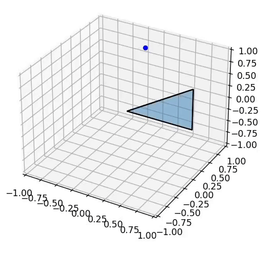

Brainstorms regarding polytopes
Here are the questions that I had while brainstorming about polytopes:1. How do you define and "construct" higher dimensional polytopes?
2. Point-collision of higher dimensional polytopes
3. Volume of higher dimensional polytopes
I have noticed that in my attempt to formalize these notions, I still lack a lot of tools from Linear Algebra and Analysis that are in the books that I have but simply haven't read because I haven't reached the chapters for them. The strategy is to define the following:
Definition: "closed-continuous-body" in a vector space V under F to be a set $C$ which satisfies:
1. For any two vectors $v_1,\ v_2$ in C, there exist a continuous function $f: [0, 1] \to C$ such that $f(0) = v_1$ and $f(1) = v_2$ and $\forall r \in [0, 1]$, $f(r) \in C$
2. $\forall v \in V,\ c \in C$ where $v$ is not the additive identity of $V$, there exists a $\lambda \geq 0$ where $c + \lambda v \in C$ yet $\forall \epsilon > 0$, $c + \epsilon (\lambda v) \notin C$
In the second condition, you can imagine a basic object in 3-dimensions and a single point inside of it (\c \in C). What it's saying is that no matter which direction you go in (v \in \V), you will always meet a clear "closed boundary point" (c + \lambda v). It's basically the part that makes this have to be similar to a closed-interval. The issue is that I still haven't properly studied what it means for a function vector-valued function like that to be continuous and maybe the details of what the range and image of a continuous function must satisfy. I'm imagining that we can define what it means for a function from $R$ to a euclidean vector space BECAUSE there exists the concept of "distance," but not all vector spaces may have that. Here's my attempt at writing what it means for a function to be continuous:
Definition: A metric set $A$ to be a set with a distance function $d_A: A \to \mathbb{R}$ which satisfies $d_A(a, b) \geq 0$, $d_A(a, b) = d_A(b, a)$, $d_A(a, a) = 0$, and $d_A(a, b) \leq d_A(a, c) + d_A(b, c)$
Definition: A function $f: A \to B$ from a measurable set A and B is continuous at $a \in A$ if and only if for any $\epsilon > 0$, there exists a $\delta > 0$ such that for every $x \in A$ where $d_A(a, x) < \delta$ implies $d_A(f(a), f(x)) < \epsilon$
Yeah I kinda cheated there, I researched the definition of continuity and metric spaces, I learned something new anyway though that's all that matters.
Definition: The affine space $A$ of a set of vectors $C$ in the vector space $V$ is the set: $$\{v | \exists k \in \mathbb{N} \text{ such that } \exists O, u_1, ..., u_k \in C \text{ where } \exists \lambda_1, ..., \lambda_k \text{ which satisfies } \sum_{i=1}^k \lambda_i (u_i - O) = v - O\}$$
Definition: An continuous internal path of a set of vectors S from $a$ to $b$ where $a, b \in S$ is mapping $p: [0, 1] \to S$ that is continuous and $p(0) = a$ while $p(1) = b$.
Definition: A linear continuous internal path of a set of vectors S from $a$ to $b$ where $a, b \in S$ is a continuous path
Definition: An SD boundary point $P \in B$ of a set of vectors $B$ in the vector space $V$ is a vector such that there exists a non-zero vector $v \in V$ where there exists an $\epsilon > 0$ such that for any $\epsilon > \lambda > 0$, $\lambda v + P \notin B$
Definition: The dimension of (the affine space of) a set of vectors B is the length of the largest linearly-independent list of vectors $v_1 - O, ..., v_k - O$ where $O, v_1, ..., v_k \in B$
Definition: A point-dilation-extension of a set of vectors S onto the point P is the set of vectors where each vector $v$ in the set satisfies $\exists \lambda \in \mathbb{R} > 0, R \in S$ such that $P + \lambda(R - P) = v$.
Definition: A polytope is a closed-continuous-body that satisfies certain properties
Now for the intuitions. The definition of the SD (same-dimensional) boundary point is my attempt at formalizing the intuition of something being in the boundary of a polytope. This works when the dimension of the polytope is the same as the dimension of the space that it is in. A point inside of a polytope is a boundary if there is a direction you can move in such that no matter how little you move in that direction, you will go outside of the polytope.
The issue with this definition is that, if you have a 2-dimensional polytope in 3-dimensions, every point in there is a boundary point. So a definition that might fix that is as follows: A boundary point is a point inside of the polytope such that there exists a direction you can move in such that there's a distance of movement where if you move in that direction by that amount or less, but not zero, you will always stay inside of the polytope yet moving in the opposite direction always lands you outside of the polytope for any amount of movement that is less than another amount of movement value. In other words:
Definition: A non-intersecting boundary point $P \in B$ of a set of vectors B in the vector space V is a vector where $\exists v \in V$ such that $\exists \epsilon > 0$ where $\forall 0 < \lambda < \epsilon$, $P + \lambda v \in B$ while $P - \lambda v \notin B$
The issue is that, now this definition will not work with intersecting polytopes. Since, on the intersection part (imagine it intuitively) of a polytope, going in the opposite if a direction that still lands you inside of the polytope will always still land you inside of the polytope or something like that. I'm imagining that I can combine these two boundary point definitions and also affine spaces for this. So here's what I'm thinking of:
Proposition: A boundary point $P$ on the set $B$ in the vector space $V$ is a boundary point of the set $B - P$ in the vector space $A - P$ where A is the affine space of B
Proposition: A polytope intersection boundary point $P$ on the set $B$ in the vector space $V$ is a boundary point of $B$ that is NOT a non-intersecting boundary point of $B$.
Again, I'm not actually sure that these attempted definitions will actually line up with how it actually is based on our intuition.
The continuous internal path ones are self-explanatory. It's a parametric function continuous function where it's image is completely inside of the set of vectors. Next is the affine space definition. An affine space in general is intuitively similar to a vector space but it may not contain 0. So it's basically a shifted vector space. For the point-dilation-extension, this is essentially what it is:

This generalizes the action done on that image. Every point inside of the resulting polytope is the result of dilating one of the point in the original polytope with the dilation origin being the dilation point. The intuitive motivation here is that every polytope that we can imagine in two and three dimensions can be made by repeadetly doing this action starting from a single point. From the triangle in that image, you can also create a square by doing a point-dilation-extension but with one of the faces of the triangular pyramid. And in the polytope-specific version of this operation, it takes a face of the original polytope as a paremeter IF the dilation point is on the same affine space as the original polytope. Otherwise, like in this case, it doesn't and so it extends the entirety of original polytope. We'll go into more detail later.
Now we're getting into the main problem: How do we formalize the properties that a polytope must have? Here are the list of ideas that I had:
1. Formalize the type of boundaries that a polytope has. We can intuitively see that something is a polytope from it's boundaries. The idea is to define the concept of faces and their dimensions and that polytopes of dimensions N have atleast 1 face of every dimension less than N, but there must also always be a finite amount of faces of each dimension. The faces themselves have to be polytopes and we know intuitively that they somehow look "flat and linear" in 3-dimensions so maybe the definitiono of these faces may have something related to that. So the big idea is to define what it means for a closed-continuous-body to be a polytope by checking if it satisfies the condition that it has these types of faces
2. Create an algorithm that centers around point-dilation-extensions. The idea is that something is a polytope if and only if it can be constructed using this algorithm.
3. The concept that I'm the most unsure about, do it using a list of steps where, on each ith step, it establishes all of the i-dimensional faces of the shape.
Definition: The boundary set of a set of vectors B is the set $$\{v | v \in B \land v \ \text{is a boundary point}\}$$ Definition: The non-intersecting dimension of a boundary point P of a set of vectors B in the vector space V over the field $\mathbb{R}$ is equal to: $$\text{dim} \ \text{span}(\{v | v \in V \land \exists \epsilon \geq 0 \ \text{s.t.} \ \forall -\epsilon \leq \lambda \leq \epsilon, P + \lambda v\ \text{is a boundary point}\})$$ Definition: A continuous boundary path of a set of vectors B in the vector space V over the field $\mathbb{R}$ is a function $p: [0, 1] \to B$ such that the image of $p$ is a subset of the boundary set of B and $p$ is continuous.
Definition: A linear continuous boundary path of a set of vectors B in the vector space V over the field $\mathbb{R}$ is a continuous boundary path $p: [0, 1] \to B$ that is in the form $p(\lambda) = \lambda J + K$ for any $J, K \in V$
Definition: An equivalence relation D(B) on a set of vectors B where $(a, b) \in B \times B$ is in $D$ if there exists a continuous boundary path from $a$ to $b$ denoted $p: [0, 1] \to B$ such that $\forall r_1, r_2 \in [0, 1]$, the dimension of $p(r_1)$ and $p(r_2)$ as boundary points is always the same.
Let's talk about the intuitive meanings of these definitions. The non-intersecting dimension definition was my first attempt at defining the dimension of a boundary point. The issue with it is that
Everything I've been doing really motivates the need of another framework that deals with bodies in some space. There was a lot of problems with intersecting polytopes. The first one was about detecting if a point is a boundary point in an intersecting polytopes. But polytopes aren't the only types of objects that can look like it's intersecting. You can have two balls in 3D such that they touch at exactly one point and they may be said to be intersecting. You can have a cone and a half-sphere that's properly glued together but on the part that they're glued, the cone is somehow "inverted" so now it intersects with the half sphere and that's another non-polytope intuitively intersecting 3D shape. We can also intuitively see which part of the boundary of such a body is the part that self-intersects. So, how do you formalize that concept more generally? My intuition tells me that it has something to do with the "tangent space" if the boundary point. I'm imagining that a boundary point is part of an intersection when there are multi tangents spaces of the body at that point. My intuition very much convinces me that it would work but I can't really be completely sure.
personal notes: N-dimensional-surrounding point in S, a point in a set S where there's an N-dimensional ball centered at the point that is a subset of the set
a point P in a set S where all directions that you can move in to keep yourself in S spans an N dimensional vector space is called an N-dimensional-go-point i cannot name things oMG
everything in a convex and concave polytope of dimension N is an N-dimensional-go-point but not intersecting ones. or atleast theres a simple example in the 1d case. is that meaningful? find an example in the higher dimensional cases!
a boundary path is a parametric curve that moves on the boundary of a polytope.
an dimension of a boundary point as a boundary point object is the dimension of the span of all vectors such that any lambda times those vectors added by the point is still a boundary point.
important: im thinking that tow points is in the same face if theres a boundary path that contains the two point and every point in the image of that boundary path has the same dimension as a boundary point
define an equavilence relation for the boundary of a polytope set where two elements are equivalent if they're on the same boundary. the amount of equiavalence classes aka the index of that equivalence relation is the amount of faces of the polytope and it has to be finite.
define another equivalence relation for the set of equivalence classes of the previous equivalence relation where its the same if the dimension of the face is the same. might need to prove that the dimension of each element in the smae equivalence class in the previous equivalence relation as boundary points is the same first. the amount of equivalence classes of this equivalence relation should also be finite
fucking hell man, intersecting polytopes always ruin EVERYTHING. the previous definition of whether or not something is on the same face breaks when the polytope is interesting